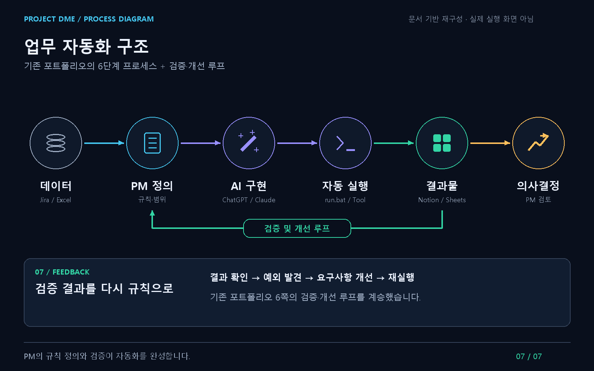
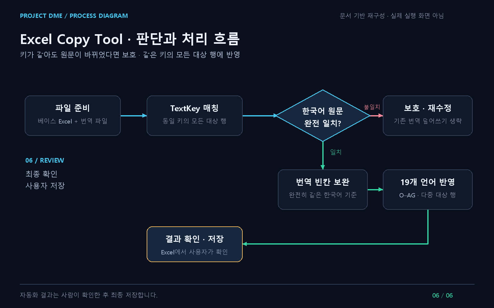

Development PM · AI / Automation
프로젝트 정보 갱신 자동화
Jira의 일감 정보를 관리 문서로 옮기고, Excel에서 같은 Key를 찾아 값을 복사하는 작업을 자동화했습니다. 처리 규칙은 PM이 정하고, AI와 구현한 결과를 실제 업무 데이터로 확인했습니다.
Work Problem
도구가 달라도
같은 정보를 다시 정리
일감은 Jira에 있었지만 다른 관리 문서에도 옮겨야 했습니다. Epic과 Task는 WBS·공정률 정보로 정리해야 했고, Excel 파일 사이에서는 같은 TextKey를 찾아 Value를 복사해야 했습니다.
- 일감 정보 갱신
- Jira → Notion
- 관리 정보 정리
- Jira Epic / Task → Google Sheets
- 일치 데이터 복사
- Source Excel → Target Excel
매번 옮기는 대신 동기화할 항목과 매칭 규칙을 정했습니다. 정보 처리와 일정·우선순위 판단을 분리했습니다.
업무 자동화 구조
업무 데이터를 의사결정으로 연결한 자동화
Jira의 개발 일감을 기준으로 Notion 아트 일감과 Google Sheets의 WBS·공정률 정보를 연결했습니다. PM이 관리 기준을 정의하고, 동기화된 결과를 점검해 누락 작업과 일정 위험을 확인하는 구조를 만들었습니다.

데이터 → PM 정의 → AI 구현 → 자동 실행 → 결과물 → 의사결정. 자동화 결과를 확인하고, 예외를 발견하면 요구사항을 고쳐 재실행했습니다.
- PM이 정의한 기준
- 동기화할 정보와 관리 범위를 정했습니다. 빌드·카테고리·업무 유형·우선순위별 분류와 필수 정보 누락, 일감 상태를 확인하는 기준을 두었습니다.
- 자동화한 반복 업무
- Jira의 아트 일감을 Notion DB에, 에픽 정보를 Google Sheets WBS에 반영했습니다. 빌드·파트·우선순위별 공정률과 일감 건수를 집계했습니다.
- 결과를 활용한 판단
- 주간 회의 전 데이터 정합성을 점검했습니다. 누락 작업과 일정 지연 가능성, 실제 진행 업무와 WBS의 불일치를 확인했습니다.
실행과 검토를 분리한 흐름
문서에 기록된 run.bat·Python 실행 파일을 통해 관리 정보를 동기화하는 흐름입니다. 모든 도구가 실시간 양방향으로 연동되는 구조로 설명하지 않습니다.
자동 실행 후에는 반영 결과를 확인하고, 예외가 있으면 처리 기준과 요구사항을 수정해 다시 실행했습니다. 공정률 산식이나 가중치는 확인되지 않아 표시하지 않습니다.
Excel Copy Tool
반복 번역 작업을 규칙과 예외 처리로 개선
TextKey를 기준으로 번역 데이터를 대조하고, 동일한 키가 존재하는 모든 대상 행에 반영하도록 처리 범위를 확장했습니다. 한국어 원문 변경 여부를 확인하고, 원문이 달라진 항목은 기존 번역을 보호하도록 예외 처리를 정리했습니다.

파일 준비 → TextKey 매칭 → 한국어 원문 완전 일치 여부 확인. 일치하면 번역 빈칸을 보완하고 다중 언어 열에 반영하며, 불일치하면 적용을 생략하고 ‘재수정’으로 구분합니다. 결과는 사용자가 Excel에서 확인한 뒤 최종 저장합니다.
주요 판단 기준을 설명하는 개념도입니다. 실제 소스의 함수 호출 순서나 전체 예외 처리를 재현한 순서도는 아닙니다.
처리 규칙을 바꾼 요구사항
- 중복 키 처리
- 첫 번째 일치 항목만 처리하는 방식에서, 키가 일치하는 모든 대상 행을 처리하도록 요구사항을 개선했습니다.
- 원문 변경 보호
- 한국어 원문이 달라진 항목은 번역 적용을 생략하고 ‘재수정’으로 구분해 수동 검토 대상으로 남겼습니다.
- 처리 범위 확장
- 단일 열 복사에서 O–AG의 19개 언어 열을 반영하는 다중 열 처리로 확장했습니다. 반복된 한국어의 번역 빈칸은 완전히 일치하는 원문을 기준으로 보완하도록 설계했습니다.
AI와 처리 로직을 구현·수정하고, 업무 데이터에서 발견한 예외를 다음 요구사항으로 정리했습니다. 승인된 업무 환경의 파일 처리 제약 안에서 사용자가 결과를 확인하고 최종 저장하도록 했습니다.
기존 업무 기록
검증과 요구사항 개선
아래는 실제 포트폴리오에 기록된 구현·검증·수정 과정입니다. 실행 화면이나 코드 캡처가 아닌, 당시 업무 과정을 정리한 문서입니다.
소스·GUI·패키징 확인 범위
현재 저장소에서는 ProjectDME_클로드의 소스·README·config.json·Git 이력과 Excel Copy Tool의 Python 소스·GUI·패키징 파일을 확인하지 못했습니다.
GUI와 실행 파일 배포, 인증·경로 설정, Commit 절차는 검증된 구현 단계로 표시하지 않았습니다. 실제 소스와 실행 자료 확인 후 보완할 항목입니다.
Automation Boundary
반복 처리는 자동화하고,
판단은 PM에게 남겼습니다.
- 자동화한 처리
- 일감 동기화, WBS·공정률 정리, Excel Key 매칭과 값 복사
- PM이 맡은 일
- 처리 대상과 규칙 정의, 실제 데이터 검증, 예외에 따른 요구사항 변경, 일정과 일감 판단
자동화 이후의 판단
실제 데이터가 처리 규칙을 바꿨습니다.
첫 구현은 동작했지만, 중복 Key가 있는 업무 데이터에는 처리 규칙이 더 필요했습니다. 자동화할 범위를 정하는 것만큼 결과를 확인하고 예외를 요구사항에 반영하는 일이 중요했습니다. AI로 구현한 도구도 이 검토를 거친 뒤 업무에 연결했습니다.